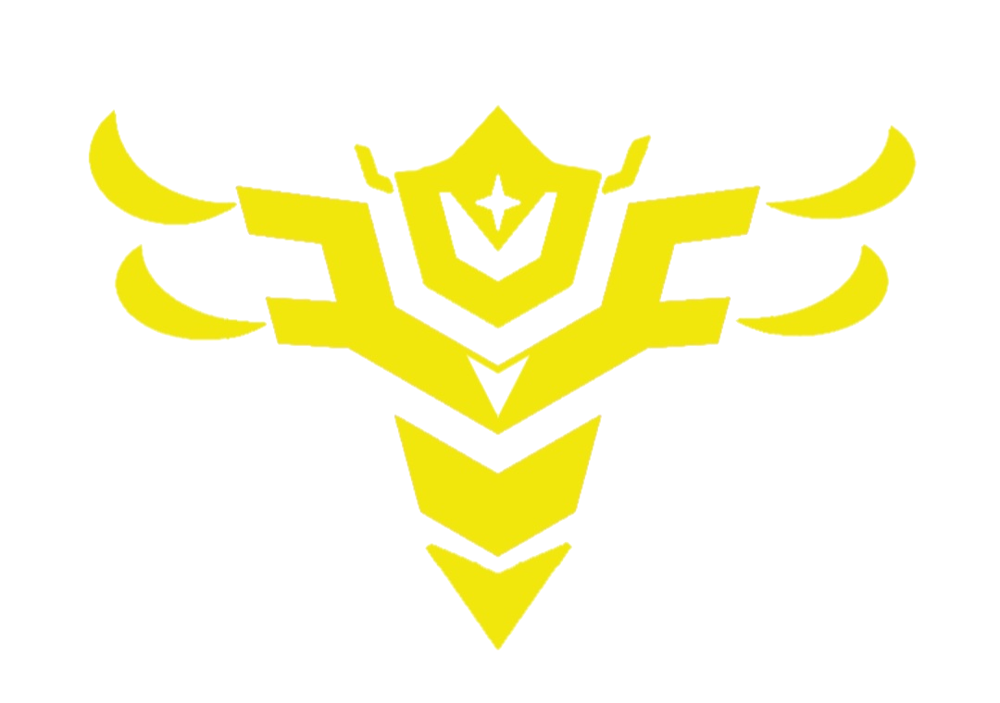
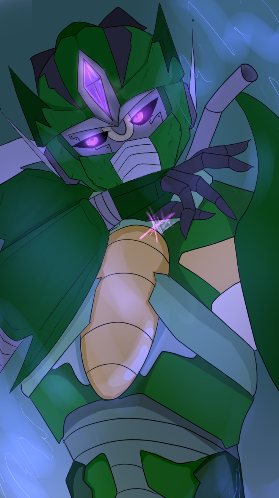
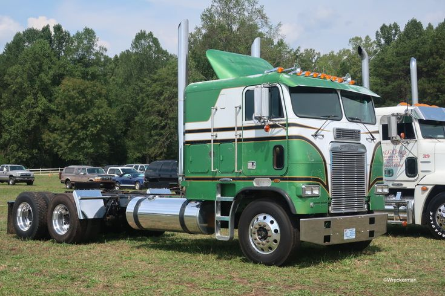
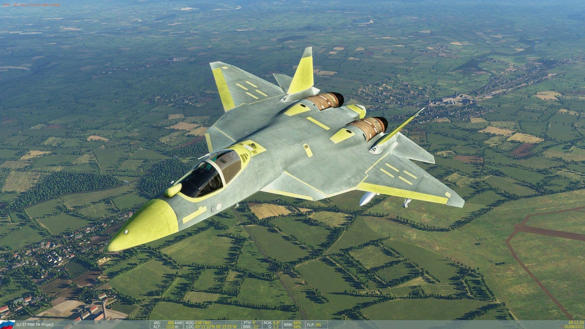

Décryptage de la clé d'accès...
Initialisation...

FICHE STRATÉGIQUE : ARAKISS PRIME
Désignation : Arakiss Prime
Origine : Cybertron
Faction : Imperarcons
Âge : 17 millions
Genre: Masculin
Profil mental : Arakiss possède un esprit extrêmement analytique et méthodique. Chaque décision est calculée selon les probabilités de réussite et les conséquences à long terme.
Intelligence : Niveau stratégique exceptionnel. Il est capable d'anticiper plusieurs scénarios simultanément et d'adapter ses plans en temps réel.
Tempérament : Calme, patient et rarement sujet à la colère. Il préfère la réflexion à l'action impulsive.
Leadership : Charismatique et convaincant, il inspire naturellement la loyauté de ses partisans. Beaucoup le considèrent comme un dirigeant visionnaire.
Vision du monde : Il considère l'ordre et la stabilité comme des priorités absolues, même si cela nécessite des décisions difficiles ou impopulaires.
Relation aux autres : Il analyse constamment les motivations des individus qui l'entourent. Il accorde sa confiance très rarement, mais reste profondément loyal envers ceux qui l'ont méritée.
Qualités : Intelligence, sang-froid, patience, détermination, capacité d'adaptation.
Défauts : Tendance à manipuler les situations et les individus, difficulté à exprimer ses émotions, obsession pour le contrôle et la prévoyance.
Motivation principale : Restaurer l'héritage de Nova Prime et bâtir un empire capable d'assurer un avenir durable à Cybertron.
Évaluation : Individu extrêmement dangereux sur le plan stratégique. Sa plus grande arme n'est pas sa puissance physique, mais sa capacité à influencer et prévoir les actions de ses adversaires.

Taille : 10;4 mètres
Poids : 38 tonnes
Structure : Châssis Cybertronien de classe impériale renforcé par des alliages antiques.
Armure : Blindage lourd multicouche capable de résister aux armes énergétiques standards.
Noyau énergétique : Réacteur à énergie noire stabilisée offrant une autonomie quasi illimitée.
Force physique : Trois fois supérieure à celle d'un Cybertronien moyen.
Vitesse : Malgré sa taille imposante, Arakiss possède une mobilité remarquable et des réflexes améliorés.
Résistance : Capable de continuer le combat même après des dommages critiques.
Optiques : Systèmes d'analyse tactique intégrés avec vision thermique, spectrale et longue portée.
Particularité : Son corps a été modifié durant l'exil des Imperarcons, augmentant considérablement ses capacités physiques et sa durabilité.
Simulation stratégique : Capable d'analyser des milliers de scénarios de combat en quelques secondes afin de déterminer l'issue la plus favorable.
Analyse tactique : Son système de calcul avancé lui permet d'identifier au fil d'un combat les faiblesses de son ennemies.
Adaptation instantanée : Arakiss peut modifier sa stratégie tout en dépendant de l'avancer dans un champ de bataille, hors si l'ennemi décide de changer de plan mais qu'il est loin d'arakis, il pet se faire surprendre à un esituation innatendu, autrement dite, imprévisible, pouvant le déstabiliser.
Manipulation psychologique : Grâce à son intelligence et à son charisme, il peut influencer les décisions de nombreux individus et retourner certains ennemis contre leurs alliés.
Leadership impérial : Sa présence inspire confiance à ses alliés et renforce leur détermination au combat.
Résistance mentale : Très difficile à manipuler ou à intimider, même face à des menaces majeures.
Maîtrise du combat : Combattant expérimenté ayant accumulé des millions d'années d'expérience militaire.
Gestion de crise : Capable de conserver son sang-froid dans les situations les plus critiques.
Renforcement Impérial : Toutes les faiblesses des capacités physiques d'Arakiss sont n'existe plus pendant plusieurs minutes (2 tours inrp)
Volonté Inébranlable : Plus la situation devient désespérée, plus sa détermination augmente, lui permettant de continuer à agir malgré des dommages importants. Mais si il possèdent des dégâts importants, il doit battre en retraite
Épée de Nova Prime : Arme légendaire transmise par Nova Prime lui-même. Forgée à l'âge d'or de Cybertron, elle est capable de trancher la plupart des alliages cybertroniens.
Bouclier Énergétique Adaptatif : Ses ailes se détache de son dos qui sont capablent d'absorber et de redistribuer une partie de l'énergie des attaques ennemies. Mais après 7/8 coups très important, le bouclier devient un bouclier lamba, la capacité de redistribution s'annule, donc quand ça arrive Arakiss, n'utilise plus sont bouclier.
Lames Corporelles : lames attaché métaliqque directement attachées à ses avants bras, ne sont pas aussi tranchante que des épées.
Canon Impérial : Arme énergétique montée sur son bras droit, capable de tirer des projectiles à haute puissance contre des cibles terrestres ou aériennes sur une distance d'un rayon de 10/15 mètres, mais plus elle vont loin, plus la puissance baisse jusqu'à qu'elles disparaissent.
Missiles Stratégiques : Réserve limitée de missiles guidés conçus pour neutraliser des véhicules lourds ou des fortifications qu'il utilise en mod avion, deux en dessous de chaque ailes.
Armure Impériale : Armure défensive, lui permettant de réduire les attaques, pas de les annuler, les dégâts qu'il reçoit sont donc réduit de 20%.
Relique de Nova Prime : Objet ancien qui lui permet de voir dans le passer et une fois tout les 1000 ans de voir dans le futur d'une très courte durer (1 tour) dans l'avenir, voyant des visions moyennement précise, elles sont fiable à moitié. Arakiss est l'un des rares êtres capables de l'utiliser sans subir ses effets secondaires, c'est à dire recevoir tellement d'info que l'on peut en mourir. les êtres capables d'y lire sont les proches de Nova Prime et leur descendant ou un prime.
Le modèle terrestre correspondant est un Freightliner FL86 Custom, largement modifié avec une technologie Imperarcon.
Ce mode lui permet de voyager rapidement sur de longues distances tout en conservant un blindage extrêmement élevé.

Son second mode alternatif est un chasseur de supériorité aérienne inspiré du Sukhoi Su-57 Felon.
Dans sa version Imperarcon, l'appareil possède un blindage renforcé, des moteurs énergétiques améliorés et une livrée verte impériale.
Ce mode est utilisé pour les missions d'interception, de reconnaissance et de domination aérienne.

Surcharge Énergétique : Une utilisation excessive de son réacteur impérial peut provoquer une instabilité temporaire de ses systèmes (après avoir utiliser le renfocement, cette instabilité fait en sorte qu'il est plus lent et moins réactif).
Obsession Stratégique : Arakiss analyse constamment toutes les possibilités. Dans certaines situations imprévisibles, cette tendance peut ralentir sa prise de décision.
Confiance Sélective : Il accorde sa confiance à très peu de personnes. Lorsqu'un proche le trahit, son jugement peut être affecté.
Protection de ses Alliés : Malgré son apparence froide, il est prêt à prendre des risques importants pour protéger les membres les plus fidèles des Imperarcons.
Héritage de Nova Prime : Son attachement à la mémoire de Nova Prime influence parfois ses décisions et peut être exploité par ses ennemis.
Dommages au Noyau : Une attaque directe contre son noyau énergétique reste la méthode la plus efficace pour neutraliser Arakiss.
Énergie Noire Instable : Si son système de régulation est gravement endommagé, son réacteur peut devenir incontrôlable et compromettre ses capacités de combat.
Informations Energétiques : Le bouclier lui demande beaucoup d'énergie ainsi que les tirs demandent un peu d'énergie et sa capacité de prévoir les mouvements de son adversaires. cela lui revint à une autonomie d'environ 1 semaine avant de se recharger et provoques les surchauffes. la recharge dure environ 2 jours.
Menace : OMEGA++
Probabilité de neutralisation : Extrêmement faible sans préparation, armement lourd ou supériorité numérique importante.
Arakiss naquit dans les hautes sphères de Cybertron au sein d'une caste influente et respectée. Très tôt, il attira l'attention de Nova Prime, dirigeant suprême de Cybertron à cette époque. Reconnaissant son potentiel exceptionnel, Nova Prime entreprit personnellement sa formation afin qu'il devienne un jour son héritier.
Pendant des millénaires, Arakiss apprit l'art de la guerre, la diplomatie, la stratégie et les mécanismes complexes du pouvoir. Sous la tutelle de Nova Prime, il développa une intelligence remarquable et une vision à long terme rarement observée chez les Cybertroniens.
Cependant, lors d'une expédition lointaine, Nova Prime disparut mystérieusement. Son vaisseau ne fut jamais retrouvé et il fut officiellement déclaré perdu. Arakiss s'attendait alors à hériter naturellement du trône de Cybertron.
Mais le Sénat Cybertronien en décida autrement. Craignant son influence grandissante, il refusa de lui accorder la succession et plaça un autre Prime à la tête de la planète. Cette décision marqua profondément Arakiss et détruisit sa confiance envers les institutions dirigeantes.
Refusant de provoquer une guerre civile immédiate, il disparut dans l'ombre avec plusieurs partisans fidèles. Durant des millions d'années, il observa l'évolution de Cybertron tout en préparant discrètement son avenir.
Lorsque les tensions entre les futurs Autobots et Decepticons dégénérèrent en guerre ouverte, Arakiss refusa de rejoindre l'un ou l'autre camp. Convaincu que les deux factions conduisaient Cybertron vers sa destruction, il mena plusieurs opérations clandestines contre les deux camps.
Considéré comme une menace commune, il fut finalement traqué puis exilé de Cybertron avec ses compagnons.
Durant son exil, il découvrit une ancienne colonie fondée autrefois sous l'autorité de Nova Prime. Cette planète, isolée depuis des millions d'années, était gouvernée par un tyran qui maintenait sa population sous une oppression permanente.
Voyant une opportunité de bâtir quelque chose de nouveau, Arakiss soutint secrètement plusieurs mouvements de rébellion. Ce qui débuta comme une résistance locale se transforma progressivement en une guerre mondiale qui dura des millions d'années.
Finalement, le régime fut renversé. Acclamé comme un libérateur, Arakiss fut couronné Empereur et entreprit de reconstruire entièrement la civilisation de la planète.
C'est à cette époque qu'il fonda les Imperarcons, une nouvelle faction destinée à surpasser tout ce que Cybertron avait connu auparavant. Sous son règne, la planète fut transformée en un immense vaisseau-monde capable de voyager à travers la galaxie.
Commence alors l'âge d'or des Imperarcons. Leur influence s'étendit à travers de nombreux systèmes stellaires, apportant prospérité, puissance militaire et stabilité à leur empire grandissant.
Malgré ce succès, Arakiss n'oublia jamais Cybertron. Le refus du Sénat et l'héritage de Nova Prime restaient gravés dans sa mémoire.
Des millions d'années plus tard, ses éclaireurs découvrirent qu'une nouvelle guerre faisait rage autour d'une planète appelée Terre. Plus surprenant encore, Cybertron lui-même se trouvait dans son atmosphère.
Comprenant que le moment qu'il attendait depuis des millions d'années était enfin arrivé, Arakiss quitta temporairement son empire avec ses meilleurs soldats. Avant son départ, il confia la direction des Imperarcons à son compagnon le plus proche, en qui il avait une confiance absolue.
Son objectif est désormais clair :
• Restaurer Cybertron.
• Honorer l'héritage de Nova Prime.
• Réclamer le trône qui lui fut autrefois refusé.
Arakiss est aujourd'hui considéré comme l'un des stratèges les plus dangereux de la galaxie et le dirigeant suprême des Imperarcons.